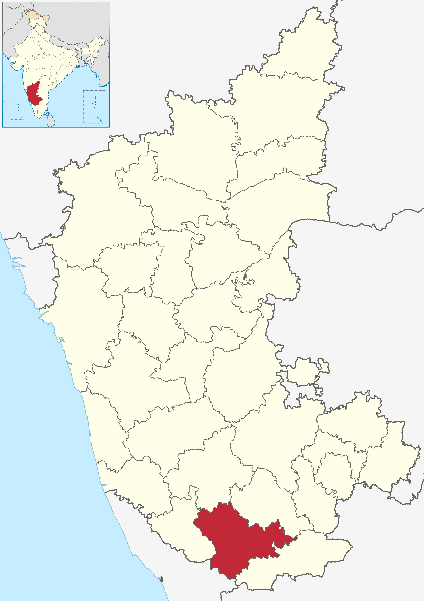

Overview of Mysuru, Karnataka

- Geography: Mysore district, located between latitude 11°45' to 12°40' N and longitude 75°57' to 77°15' E, is traversed by the Kaveri River. The presence of the Krishna Raja Sagara reservoir is notable.
- Climate: The district experiences a moderate climate with temperatures ranging from 15°C in winters to 35°C in summers. The average annual rainfall in 2022 was 1,318 millimeters, influencing water resources.
- Geology: Mysore district exhibits red soils, lateritic soil, and deep black soil. Minerals like quartz, limestone, and graphite contribute to the geological composition and potential impacts on water quality.
- Water Resources: The district's water resources primarily include the Kaveri River and reservoirs like Krishna Raja Sagara. Water quality is crucial for drinking, agriculture, and industrial use.
- Human Population: With a population exceeding 3 million, Mysore district's water resources face pressure due to increasing human activities and urbanization. Population density, urbanization rates, and industrial activities can impact water quality.
- Agricultural Practices: Agriculture is prominent in Mysore district, relying heavily on water for irrigation. The use of fertilizers, pesticides, and agricultural runoff can affect water quality by introducing pollutants.
- Environmental Concerns: Environmental factors like deforestation, soil erosion, and habitat degradation can indirectly impact water quality. These factors influence the hydrological cycle and sedimentation processes.
Jal Jeevan Mission Goals
- Provide tap connections to all rural households for regular, long-term supply of safe drinking water
- Ensure water quality and reduce water-borne diseases
- Empower communities in planning, implementing, operating & maintaining systems
- Promote groundwater recharge, conservation and reuse
Key Achievements

- Increased tap water coverage from 3.23 Cr to 13.98 Cr households
- 9-fold increase in connections in backward districts
- 23.55 lakh women trained for water quality testing
- 206 partner organizations and 99 institutions engaged